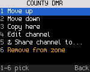
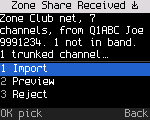
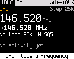
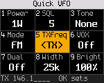
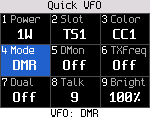
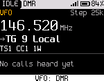

Questa pagina non è ancora tradotta; è mostrata in inglese.
Channels, Zones and the VFO
A channel is a saved frequency with its mode (FM, DMR, or P25 and NXDN where the radio runs them) and settings. A zone is a named list of channels. The VFO tunes any frequency by hand. Channels and zones come from the codeplug (Programming the radio).
Changing the channel
- Turn the channel knob, or press Up or Down on Home, to step through the zone's channels.
- Type the channel's position on Home and press OK. For example, 1, 2, OK goes to channel 12 of the zone.
- Type letters of the channel's name on Home (see Find) and press OK on it.
- Press OK, 4 (Zones), focus the zone and press #. The zone's channels open. Focus one and press OK.

Changing the channel ends temporary changes, the reply window, digital monitor and a scan.
Changing the zone
- Press Next zone or Previous zone (Key roles shows which keys these are on your radio). The radio shows "Zone:" and the name.
- Or press OK, 4 (Zones). The list opens with the current zone focused ("here"). Focus another zone and press OK. The radio switches to it and returns to Home.
- Or type the zone's name on Home. Find lists zones too.

The Zones list shows the VFO first, then every zone with its number of channels. Type letters to filter it.
Making a zone
OK, 4 (Zones), then the last row, Create New Zone. Type the name and press OK. The radio saves the empty zone and focuses it in the list. Press # to open it and add channels with Add channel. A channel's own page can also put it in zones (Zones row, Editing a channel).
Editing a zone
A zone's list (OK, 4, focus the zone, #) also edits the zone. Each change is saved at once: there is nothing to save or discard. On a radio without #, hold OK wherever this section says #.

-
Add channel (the first row) lists every channel the zone doesn't hold. Type letters or digits to filter it and press OK on one. It goes after the channel you are on, or at the end of a zone you are not using.
-
# on a channel opens its actions:
Key Action Does 1 Move up swaps it with the channel above. The menu stays open, so press 1 again to move it on 2 Move down swaps it with the channel below 3 Copy here opens a copy at the lowest free channel number, named with " 2" added. Change what differs and hold OK: the copy is saved and put after the channel in this zone 4 Edit channel opens the channel's settings (Editing a channel) 5 Share channel to... sends the channel to another radio or a talkgroup (Sharing a zone) 6 Remove from zone takes it out of this zone. The channel stays in Channels and in any other zone -
Zone options (the last row):
Key Action Does 1 Rename type the new name and press OK 2 Copy as new zone makes a new zone with the same channels, named with " 2" added 3 Share zone to... sends the zone to another radio or a talkgroup (Sharing a zone) 4 Delete zone asks first, with "No, keep it" focused. The zone's channels stay in Channels

Moving, adding and removing keep the radio on its channel. Removing the channel you are on moves the radio to the next channel in the zone. A zone holds a channel once, and the radio refuses a channel past the zone's size ("Zone full"). A radio whose codeplug has no zones shows one zone, "All channels"; the first change saves it as a real zone.
Deleting the zone you are using moves the radio to the zone that comes after it in the list (or the one before, when it was last). Dual watch keeps watching a channel from a deleted zone when another zone holds it, and otherwise stops. A zone marked for roaming loses the mark when it is deleted; the other marks stay on their zones.
Sharing a zone
You can send a zone, or one channel, to another radio or a talkgroup over DMR. Status: sending one channel works on a radio; sending a whole zone and receiving are tested only in the host tests so far.
Send:
- Tune a DMR channel. The zone goes out on it.
- Press OK, 4 (Zones). Focus the zone and press #. Its channels open.
- For one channel: press # on it and pick 5 Share channel to..., or pick Share channel to... in the channel's settings. For the whole zone: pick Zone options (the last row), then 3 Share zone to....
- Pick a contact or talkgroup and press OK. For a station that isn't a contact, type its ID: "Private ID ..." and "TG ..." appear under the contacts. The radio says where it sends: "Sending to ... via 442.375" (on a repeater, its output frequency). A banner says "Sent to ..." when it is out.
A zone too big for one send goes in part, and the radio says how much ("Sending 40 of 60 channels"). Scan lists, group lists and privacy keys are never sent.
Receive: Settings > Connections > Accept zone shares is On at first. Nothing is imported until you say so. Set it to Off to ignore what others send.

- A banner says "Zone from ...". It stays until you press # to open it or Back to hide it. The offer also waits under Tools > Zones/Chs Received for 10 minutes. The screen is titled Zone Share Received, or Channel Share Received for one channel.
- The offer shows the zone's name, its channels, the sender and how many channels are outside your radio's bands.
- Pick Preview to see the channels, Import to add them, or Reject.
What an import does:
- The zone is added after your zones. If you have a zone with that name, it gets " 2".
- Only channels your radio can receive come in. Every one is receive only: turn transmit on per channel when you know you may use it.
- Talkgroups and contacts you already have are used with your names. Missing ones are added.
- The same zone sent again by the same radio updates your copy instead of adding another. It replaces only the channels from the earlier import that you left as they were. Channels you added to the zone or changed stay, after the new ones.
- A single channel is added to a zone you pick.
At most 6 offers an hour are shown, one at a time. The format is in zone-share.md.
Every channel
OK, 5 (Channels) lists every channel in the codeplug by number and name, whichever zones hold it. Each row ends with the RX frequency and the talkgroup (DMR) or FM. A long name stays whole and the row shortens the rest: "TG" goes first, then the frequency. The channel you are on is marked. Type letters to filter the list.

- OK on a channel opens its settings, where you can change them (below).
- # in the list goes to the channel: in the current zone if it holds it, otherwise in the first zone that does. A channel in no zone says "Not in any zone".
- The first row, New from current, starts a new channel from what the radio uses now (below).
Editing a channel
The channel's page lists every setting: name, mode, RX and TX frequency, power, RX only, then bandwidth, tones, VOX and tone burst on FM, or color code, timeslot, TX contact, RX group list, own ID, direct mode, talk permit beeps and talker alias on DMR, then TX time-out, scan, battery saver and the zones that hold it. The list scrolls.

Focus a row and press OK:
| Row | What OK does |
|---|---|
| Mode | steps to the next mode: FM, DMR, then P25 and NXDN on a radio that runs them. Stepping on comes back to the mode the channel had, with its settings as they were |
| Two choices (timeslot, bandwidth, RX only, scan, VOX, tone burst, direct mode, beeps, talker alias, battery saver) | switches to the other one |
| Power, RX CTCSS/DCS, TX CTCSS/DCS, color code, TX time-out | opens a picker: turn the knob (or Up / Down) to the value, OK keeps it, Back cancels. Color code and time-out also take digits |
| RX CTCSS/DCS, TX CTCSS/DCS, typed | type a CTCSS tone with its tenths digit: 8 8 5 is 88.5, 1 3 1 8 is 131.8. Under 60 the digits are whole Hz: 6 7 is 67.0, 1 0 0 is 100.0. Start with 0 for a DCS code: 0 2 3 is D023N. Back takes the last digit back. For an inverted DCS code, turn the knob one step: each code's I follows its N (D023N, D023I, D025N) |
| Zones | opens every zone, marked "In" where the channel is. OK puts the channel in a zone or takes it out, saved at once. A new channel shows the row once saved |
| RX, TX, own ID | type the digits, OK keeps them, Back takes the last digit back. Digits outside the radio's bands are refused as you type. A new RX moves TX with it, so a repeater keeps its offset. If the new RX is in another band (UHF to VHF), or TX would land outside the band, TX is set to the new RX |
| Name | opens text entry (below) |
| TX contact, RX group list | opens the list of contacts or group lists; type letters to find one |

A changed row is marked until you save. Hold OK anywhere on the page to save, or pick the Save row. The radio writes the channel in the background and says "Saved channel 3". Back with unsaved changes asks whether to discard them; the answer starts on "No, keep editing". Saving any channel drops the quick-settings changes on the channel you are on: the radio reloads it from the codeplug.
The radio won't save a channel without a name, with RX outside its bands, with TX where it can't transmit (set RX only instead), a DMR channel in the broadcast band or in the air band (on a radio that receives AM there), or a DMR channel without a TX contact, unless it is RX only. It says which. A DMR channel where the radio receives but can't transmit saves when it is RX only.
Save as new channel stores the edited copy at the lowest free number and leaves the original as it was. Tune to this ch tunes the channel and Share channel to... sends it to another radio (Sharing a zone); save or discard your changes first.
Text entry
It works like a phone keypad. Keys 2 to 9 type their letters, then the digit, then the letters in the other
case: press 2 once for A, twice for B, four times for 2, five times for a. Press the same key again within a
second for the next character; another key, or a pause, moves on. 1 types punctuation (. - / , ' & ( ) @ _ ! ?
and 1), 0 a space, 0, +, # and *. The title shows the mode.
# switches the mode: ABC (capitals, the start), then 123 (each key types its digit), then abc (lower case), then back to ABC. Holding a digit key types the digit in any mode. Back deletes the last character (* does too). OK keeps the name. To leave without changing it, press Back until the field is empty and once more. Names hold up to 16 characters.
On a radio without a keypad, Up / Down change the last character, OK adds another, and holding OK keeps the name.

New channel from current settings
OK, 5, then the first row, New from current. It opens an unsaved copy of the channel you are on, with any quick-settings changes, or of the VFO, at the lowest free channel number. The name gets " 2" added (from the VFO, the frequency). Change what differs, then hold OK to save it. A new channel is in no zone yet: add it to one with Add channel in the zone's list (Editing a zone), or use Copy here there to make the copy and add it in one step.
Saving changes to a channel
Change power, squelch, tone, bandwidth, timeslot, color code or mode with quick settings. Then hold OK on Home or in quick settings. The radio writes the channel in the background and shows "Saved to channel". The squelch is saved as the radio's default squelch, not in the channel.
A save that fails shows "Couldn't save: ..." and the change stays for now only.
The VFO
The VFO is an FM VFO or, on a radio with DMR, a DMR VFO. It keeps its mode like its frequency. Everything you change in the VFO (mode, color code, timeslot, talk target) is kept, also when you go to a channel and come back, and after a restart.
- OK, 4 (Zones). The VFO is the first row.
- Press OK. Home shows the frequency large, and the radio says "VFO: type a frequency".
On a radio with a VFO/MR key, press it instead: it goes between the channel and the VFO. Settings > Keys can give any side key the same job, "VFO/Channel", on a press or a hold.

Copy a channel to the VFO
To start from a channel, press *, 4 ("To VFO") on it. The channel's settings become the VFO's and Home shows the VFO ("Copied to VFO"). On a radio with a VFO/MR key, hold it instead. Settings > Keys can give any side key "Copy to VFO", on a press or a hold.
| Copied | Notes |
|---|---|
| RX and TX frequency | A repeater's offset stays until you step the frequency |
| Mode, bandwidth, power | Power stays "default" if the channel's is |
| Tones (FM) | CTCSS or DCS, RX and TX |
| Color code, timeslot, talk target (DMR) | The talk target is the contact's ID, as a group or private call. A channel with no contact gives what it would send now |
- The VFO gets what is in effect now, so a temporary change you made on the channel (a bandwidth, a power level, a talk target) is copied too.
- The channel stays as it was. The VFO keeps the values like its other settings, also after a restart.
- Not copied: the RX group list, the privacy key, roaming, the data and emergency settings, and the squelch level. The VFO uses the radio's own values for these.
- A channel the VFO can't hold is refused with a short message and nothing changes: a DMR channel on a radio build whose VFO is FM only (or the other way round), or a frequency outside the radio's bands.
- In the VFO the same key says "Already in VFO".
Typing a frequency
On Home in the VFO, type the frequency digits from the hundreds of MHz down, without a decimal point. The radio shows what you typed as you go.
| Keys | Frequency |
|---|---|
| 4 4 6 0 0 0 | 446.000 MHz |
| 1 4 6 5 2 | 146.520 MHz |
| 4 3 8 2 6 2 5 | 438.2625 MHz |
| 0 8 8 1 | 88.100 MHz (below 100 MHz, start with 0) |
- Type at least the three MHz digits, then press OK (or # where the radio has that key) to tune.
- Back deletes the last digit.
- A digit that can't lead to a frequency in the radio's bands is refused, and the radio shows the bands. The bands depend on the radio (Radio reference).
- Up to eight digits (10 Hz). After 10 s without a key, the entry is dropped.

Stepping
Up, Down and the channel knob change the VFO frequency by its step. The step is Settings > Talk > VFO step. Its default, Auto, follows the width: 25 kHz at 25K (and in AM) and 12.5 kHz at 12.5K. In the broadcast band the step is always the FM broadcast step, whatever the VFO step. The step is in the status strip.
Split (repeater offset)
In the VFO, *, 5 (*, 6 in the DMR VFO) is TX freq (the split): TX against RX, "Off" or the offset ("+600k", "-5M").

-
Up and Down step through the band's usual offsets, at once. Up goes +, Down goes -, the most common first, and stop at the last one:
Band Offsets 2 m (below 200 MHz) 600 kHz, then 1 MHz 1.25 m (200-300 MHz) 1.6 MHz 70 cm (above 300 MHz) 5 MHz, then 7.6 MHz, then 1.6 MHz On 70 cm, Up from Off is +5M, again +7.6M, again +1.6M; Down from +5M goes back to Off, then -5M.
-
The bottom row says what the keys do ("Up/Dn +/- 0-9 TX freq") and, while you type, shows the whole TX frequency so far ("TX 147.02___").
-
Any other split (a custom one): type the TX frequency as you type a VFO frequency (1 4 7 0 0 is 147.000) and press OK. Back takes the last digit back. Any frequency the radio can transmit on is accepted.
-
A new RX frequency keeps the offset within the same band. A move to another band (UHF to VHF, say) makes the VFO simplex.
-
Monitor stays on its key in the VFO, and privacy is for channels.
-
Home shows the TX frequency: on FM after PTT→; on DMR in the top row ("TX 147.120"), or as the offset beside the power on displays without that row. While you transmit, the large frequency turns red and shows the TX frequency (on DMR, the call screen has a "TX" line).

DMR in the VFO
*, 4 in the VFO switches it between FM and DMR on the same frequency ("VFO: DMR"), and to P25 and NXDN after DMR on a radio that runs them (P25 in the VFO, NXDN in the VFO). In DMR the quick settings are the DMR ones:
| Key | Tile | What it does in the DMR VFO |
|---|---|---|
| 2 | Slot | Switches the timeslot, 1 or 2 |
| 3 | Color | Sets the color code, 0 to 15 (1 at first). Type it or use Up and Down, then OK |
| 8 | Talk to | Picks or types the talk target, a talkgroup or a person. Both OK and holding OK keep it for the VFO |

- Pick the color code and timeslot of the repeater or the simplex frequency you use. The radio talks to talkgroup 9 until you pick another target, with your own DMR ID.
- The VFO has no listen list. It plays calls to its talk target, all calls and private calls to you. Other talkgroups show as "Other TG: not played". To hear everything on the slot, turn on digital monitor.
- Home shows the frequency, the talk target, the timeslot and the color code. Changes here don't show a dot and Back doesn't undo them.
- The DMR VFO sends data messages and can start an emergency, as a DMR channel does. It sends no talker alias.

P25 in the VFO
On a radio that runs P25 (feature matrix), P25 is one of the VFO's modes: *, 4 goes FM, DMR, P25, then FM again ("VFO: P25"). The VFO keeps the mode when the radio is switched off.
- It hears clear P25 voice calls on network access code 293, to every talkgroup. Encrypted calls stay silent.
- PTT sends a P25 voice call to talkgroup 1 from your P25 unit ID, or your DMR ID when the codeplug has none.
- Home shows "P25", what PTT calls ("TG 1") and the network access code ("NAC 293"). During a call it shows who calls and where ("ID 3101234 > TG 7"), or why the call isn't played ("Encrypted: not played", "Other TG: not played"). FM's tone and width tiles say "FM only: this is a P25 channel".
- The code, talkgroup and talkaround can be changed only from a computer for now (
rfoundry_debug.py radio p25), and the change lasts until the radio is switched off.
P25 channels
A P25 channel comes from a codeplug written on a computer (P25 and NXDN in the editor), a zone shared by another radio, the VFO (in P25, open Channels, New channel from current settings and save it), or any channel: press OK on its Mode until it says P25, set the NAC and save. A channel made P25 starts with NAC 293. The channel keeps the network access codes, the talkgroup (when a contact has that talkgroup; else talkgroup 1) and talkaround. A shared one comes in receive only, as every shared channel does: turn RX only off in its settings. On a radio without P25 the channel shows as P25 and stays silent.
- Home shows it as in the VFO. It hears its talkgroup, calls to everyone and calls to your ID, unless the codeplug says to hear every call.
- The channel's settings show "P25" as the mode and only the settings P25 uses. Talkaround is On or Auto (on when RX and TX are the same frequency).
- NAC sets the network access code both ways. Type its hex digits; Up and Down step the last digit through 0-9 and A-F, so for 1A5 type 1, 9, Up, 5. F7E receives every NAC. The talk group is TX contact, your unit ID Own ID.
- OK on Mode steps to NXDN (on a radio that runs it), FM, DMR, then back to P25 with its settings as they were, so a slip costs nothing. Saving the channel as another mode removes its P25 settings: the radio asks first ("Save as FM?", "Save as DMR?", or "Unsaved Changes" for NXDN), and "No, keep editing" is the default. Save as new channel leaves the P25 channel as it is.
- Scan stops on P25 channels and holds on a call you would hear there. Dual watch takes one as A or B.
P25 trunked channels
On a radio that runs P25 trunking, a channel can belong to a P25 trunked system (Phase 1 voice channels). The system (its control channels, its identity, your unit ID) and its channels (one talkgroup each) come from a codeplug written on a computer (P25 and NXDN in the editor). A new system is listen only. The channel's settings show "P25T" as the mode.
| Home says | What the radio is doing |
|---|---|
| Finding system | Trying the system's control channels in turn |
| Control channel | On the control channel, waiting for a call to the channel's talkgroup |
| Following TG 201 | On the voice channel of a call. It goes back to the control channel when the call ends |
| Registering | Transmit is on: registering with the system and joining the talkgroup |
| TG 201 | Registered. PTT asks the system for a voice channel |
| Wait, Queued | PTT is held and the request is with the system. Talk when home shows the transmission |
| Denied, Reg. denied | The system refused the request or the registration |
- A system set to listen only, a channel set to RX only, or one without a unit ID or talkgroup never transmits: PTT says "RX only".
- Calls to other talkgroups are followed only when the channel is set to follow every group of the system.
- Calls to one unit, emergency and Phase 2 (TDMA) voice channels are not there yet.
- Scan skips these channels and dual watch doesn't take them: a trunked channel follows its system instead.
- This has run against a test control channel only, not yet on a working system.
NXDN in the VFO
On a radio that runs NXDN, NXDN is one of the VFO's modes, after P25 ("VFO: NXDN"). It is NXDN conventional voice at 9600 bit/s (12.5 kHz) or 4800 bit/s (6.25 kHz), through the radio's DMR voice codec.
- It hears clear voice calls on every radio access number (RAN), to every group. Encrypted calls stay silent.
- PTT sends a voice call to group 1 with RAN 1 at 9600 bit/s, as unit 1 until a computer sets another ID.
- Home shows "NXDN", what PTT calls ("TG 1"), the RAN sent and the rate ("RAN 1 9600"). During a call it shows who calls and where, or why the call isn't played. FM's tone and width tiles say "FM only: this is NXDN".
- The rate, the RANs, the unit ID and the group can be changed only from a computer for now
(
rfoundry_debug.py radio nxdn), and the change lasts until the radio is switched off. - Some radios only transmit NXDN or only receive it (feature matrix). One that only receives says "This mode: receive only" on PTT.
NXDN channels
An NXDN channel comes from a codeplug written on a computer (P25 and NXDN in the editor), a zone shared by another radio, the VFO (in NXDN, open Channels, New channel from current settings and save it), or any channel: press OK on its Mode until it says NXDN, set the RAN and rate, and save. A channel made NXDN starts with RAN 1 at 9600 bit/s. The channel keeps the rate, the RANs, the squelch and the group (when a contact has that group; else group 1).
- Home shows it as in the VFO. The channel's settings show "NXDN" as the mode.
- OK on Mode steps to FM, DMR, P25 (on a radio that runs it), then back to NXDN with its settings as they were. Saving the channel as another mode removes its NXDN settings: the radio asks first ("Save as FM?", "Save as DMR?", or "Unsaved Changes" for P25).
- RAN (0-63) and Rate (9600 or 4800 bit/s) are in the channel's settings, with the group (TX contact) and your unit ID (Own ID, up to 65519). RAN 0 receives every RAN. The squelch can be changed only from a computer.
- Scan stops on NXDN channels and holds on a call you would hear there, at a rate the radio can receive. Dual watch takes one as A or B.
Leaving the VFO
Press OK, 4, then OK on the VFO row again ("Back to channels"). Or pick a zone or channel. A VFO/MR key or a side key set to "VFO/Channel" goes back to the channel you came from.
Air band and FM broadcast
Some radios also receive the aircraft band in AM and FM broadcast stations (Radio reference). There is no mode to pick and no menu: the frequency decides.
| Tune to | You hear |
|---|---|
| 108 to 137 MHz | Air band, in AM. Home shows "Air Band AM" and the squelch level, and "AM" in place of "FM" |
| The broadcast band (65 to 108 MHz on most receivers) | FM broadcast, on the radio's broadcast receiver. Home shows "Broadcast FM" |
Tune there in the VFO (type 1 1 8 1, or 0 8 8 1, and press OK). A DMR VFO switches to FM there and stays FM; DMR can't be picked in these bands. To keep a station, use New from current in the channel list (or type the RX frequency in the channel editor): the channel becomes RX only, ready to save. Its Mode reads AM in the air band and FM in the broadcast band, and OK on it doesn't switch to DMR; the tone rows are hidden. A channel programmed on the frequency in the codeplug works too, even one stored as DMR. Both bands are receive only: PTT shows "Air band: receive only" or "Broadcast: receive only" and the radio doesn't transmit. Sub-audio tones are ignored.
In the Codeplug Editor, a channel whose RX frequency is in one of these bands is set to RX Only when you type the frequency, its TX frequency follows RX, and its mode shows as "AM (air band)" or "FM broadcast". The Problems list warns about a channel there that isn't RX Only or is DMR.
In the air band the squelch works as on any FM channel. A broadcast station plays whatever the squelch level, so a fading station isn't cut, and the screen shows it is receiving. The LED stays off: a station isn't a call. The squelch only stops a scan on a station: while a scan runs, the broadcast band is quiet between stations.
In the broadcast band the knob and Up / Down step 200 kHz, landing on the odd tenths (88.1, 88.3 ... 107.9) where stations are in the Americas. For 100 kHz steps set Settings > Talk & listen > FM broadcast step to 100 kHz. Either way you can type any frequency, 90.2 for example. In the air band Auto steps 25 kHz; set the VFO step to 8.33 kHz for the narrow channels.
Channels the radio can't use
Channels outside the radio's bands don't transmit ("Outside ..."). Receive-only channels show "RX only" as the talk target.